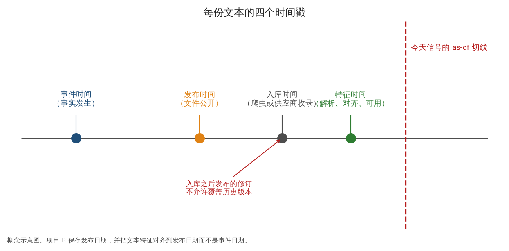
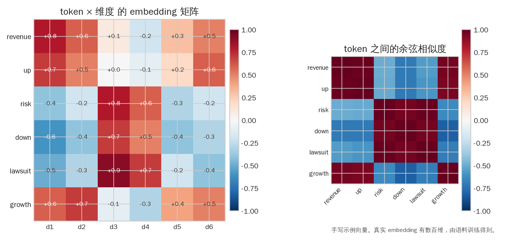
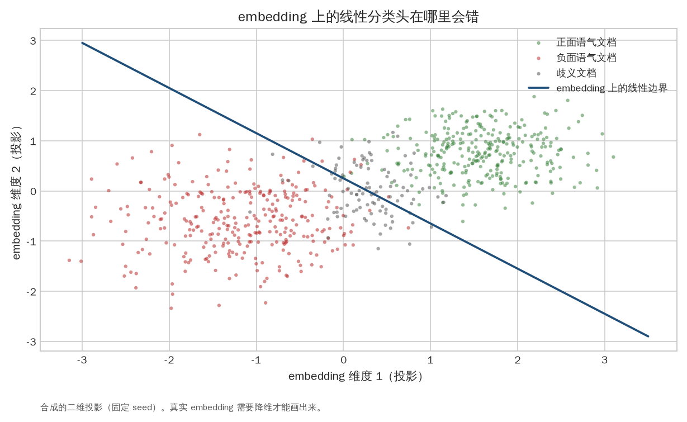
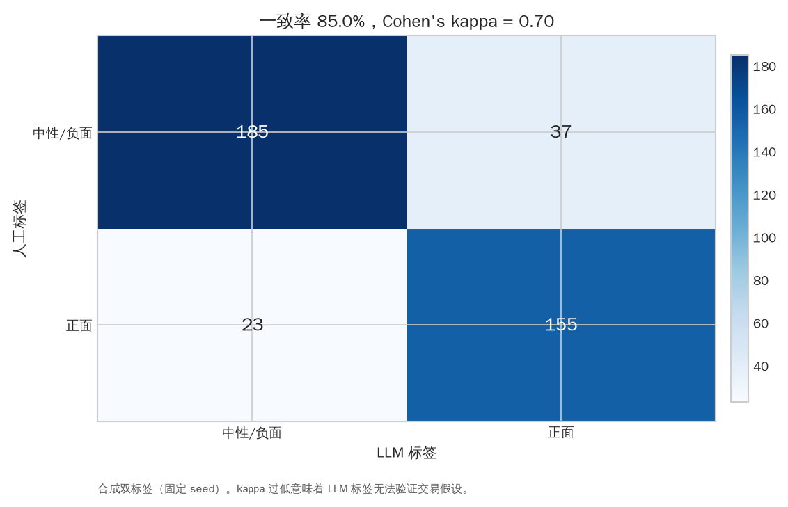
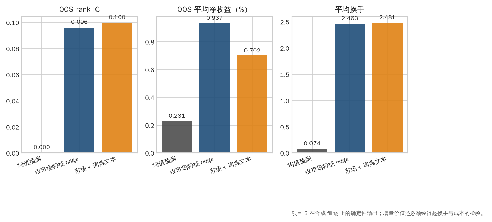

第八章：LLM4Quant 与文本研究（LLMs for Quant Research）¶
LLM 是处理非结构化文本的工具，不是自动产生 alpha 的魔法。它可以把公告、新闻、电话会、研究报告和网页转换成结构化事件、摘要、情绪或向量；但时间戳、标签定义、评估和交易成本仍然由量化研究流程决定。
0. 学习目标¶
完成本章后，你应当能够：
- 区分 token、embedding、classification、information extraction、summarization 和 retrieval；
- 设计一个不会使用未来修订文本的 point-in-time 文本数据集；
- 比较词典、TF-IDF、传统 ML、embedding 和 LLM prompting 的层级；
- 为 LLM 输出定义结构化 schema、置信度、人工审查和失败处理；
- 评估文本模型的标签质量、增量预测能力、延迟、成本和稳定性；
- 理解 RAG、fine-tuning、local model 和 API 的工程/合规取舍；
- 把项目 B 的 lexical baseline 扩展到可选语义层，而不跳过基准实验。
1. 为什么文本可能有研究价值¶
金融市场中的许多信息先以文字出现：财报、监管披露、央行声明、新闻、电话会问答、公司公告、招聘和供应链描述。文字可能包含：
- 新事件（new information）；
- 对已知事实的语气和不确定性；
- 管理层预期与实际结果的差异；
- 风险、诉讼、融资、供应和监管变化；
- 不同来源之间的冲突。
市场是否在文本发布前后重新定价，取决于可见性、速度、覆盖和交易成本。LLM 只能帮助抽取/表示文本，不能替代 event time、baseline 和 return evaluation。
2. 文本数据的时间与版本¶
2.1 四种时间¶
文本研究至少记录：
- event time：事件实际发生时间；
- publication time：文档公开时间；
- ingestion time：你的系统收到时间；
- revision time：文档被编辑、撤回或供应商修订的时间。
研究标签只能使用 publication/ingestion time 之后可获得的原始内容。新闻聚合器可能显示原始发布时间，也可能把旧文重新推到首页；网页抓取要保存原文、HTML/hash 和抓取时间。

图 8-1｜每份文本的四个时间戳。 时间轴依次是事件时间、发布时间、入库时间和特征可用时间，红色虚线是今天信号的 as-of 切线。只有切线左侧、且已入库的版本可以使用；入库之后的修订不允许覆盖历史，否则特征偷偷看见了未来版本。数据类型：概念示意图；项目 B 按发布日期对齐文本特征。
2.2 文本的 point-in-time 约束¶
不要使用：
- 后来编辑后的新闻版本模拟当时决策；
- 事后添加的“公司最终是否违约”标签作为当时 feature；
- 事件发生后才知道的完整电话会摘要；
- 将同一事件的多篇后续报道随机放入训练和测试。
文本版本和标签需要分离存储：doc_id、published_at、retrieved_at、source、raw_text_hash、revision_id、label_as_of。
3. LLM 的最小概念¶
3.1 Token 与上下文窗口¶
模型不直接阅读“字”或“句子”，而是把文本切成 token。不同模型的 tokenization 不同，数字、代码、中文和专有名词可能被切成不同数量。上下文窗口（context window）限制一次输入的 token 数量；过长文档需要截断、分块或摘要，而截断可能丢掉决定性段落。
3.2 Embedding¶
Embedding（向量表示） 把文本映射为向量：
语义相近的文本通常在向量空间更接近，可用 cosine similarity：
Embedding 适合相似度、聚类、检索和作为下游模型特征，但“语义相近”不等于“收益方向相同”。市场需要的是与未来收益或事件相关的增量信息。

图 8-2｜文本如何变成矩阵。 左图是 6 个 token 在 6 个维度上的示例向量；右图是它们两两之间的余弦相似度：revenue/up/growth 聚在一起，down/risk/lawsuit 聚在一起。embedding 把“语义相近”变成可计算的距离，但语义相近不等于收益方向相同。数据类型：概念示意图（手写示例向量）。
3.3 Generative LLM 与 prompting¶
生成式 LLM 根据上下文预测下一个 token。prompt 可以要求它摘要、分类、抽取事件或输出 JSON，但输出可能有 hallucination、格式错误、解释漂移和模型版本差异。prompt 不是验证：必须把输出和人工标注/规则 baseline 比较。
4. 文本建模层级（从简单到复杂）¶
Level 0：规则与词典¶
正负词、否定词、风险词、数字变化和事件关键词组成 lexical feature。优点是透明、便宜、易复现；缺点是无法理解上下文、讽刺、否定范围和行业术语。项目 B 的 lexical_features 属于这一层。
Level 1：Bag-of-Words/TF-IDF¶
将文档表示为词频或 TF-IDF：
再用 logistic/ridge 预测标签。适合建立强而透明的 baseline，尤其在样本有限时。
Level 2：预训练 embedding + 轻量模型¶
冻结 embedding，给每篇文本一个向量，再训练 logistic/ridge/GBDT。它把语义表示与金融预测分开，便于控制数据泄漏和成本。要记录 embedding 模型版本和生成日期。

图 8-3｜线性分类头在哪里会错。 正面与负面语气文档在投影空间大致可分，但中间存在一团歧义文档，线性边界必然在那里犯错。这解释了为什么 Level 2 方法要报告置信度与拒绝率，而不是把每篇文档都强行分类。数据类型：固定 seed 合成二维投影。
Level 3：Prompted classification/extraction¶
让 LLM 输出固定 schema：
{
"event_type": "guidance_cut",
"direction": "negative",
"horizon": "next_quarter",
"evidence_spans": ["..."],
"confidence": 0.72
}
真实生产中还要验证 JSON schema、枚举值、证据 span 是否来自原文、异常输出如何重试。不要把一段自由文本直接拼到交易信号中。
Level 4：Fine-tuning/adapter¶
使用领域标注数据调整模型。它可能提高一致性和术语理解，但需要大量高质量、时间隔离的标签，且模型漂移、版权、隐私和部署成本更复杂。先证明 frozen embedding/prompt baseline 的增量，再考虑 fine-tune。
5. RAG（Retrieval-Augmented Generation）¶
RAG 把检索和生成分开：
核心组件：
- chunking：文档切块并保留标题、页码、时间；
- embedding/index：建立向量或关键词索引；
- retrieval：按相似度、日期、来源和权限过滤；
- reranking：重排候选片段；
- generation：基于片段生成回答/结构化结果；
- citation/evidence：返回原文位置便于审计。
金融研究中要加入 as-of date 过滤：查询 2021 年信息时不能检索 2023 年重写的文档。RAG 的答案质量不等于交易 alpha，必须单独评估检索 recall、抽取 precision 和未来收益。
6. Prompt 设计与可复现性¶
一个研究级 prompt 应固定：
- role 和任务定义；
- 输入字段和时间语义；
- 输出 JSON schema；
- 标签定义和边界案例；
- evidence 要求；
- 温度、模型版本和随机种子（若支持）；
- 失败时返回
unknown，不要猜测。
保存 prompt 模板、模型版本、请求时间、输入 hash、输出原文和解析结果。否则无法比较 prompt 改动是否真的改善模型。
7. LLM 文本标签的评估¶
7.1 Label quality¶
抽取/分类先和人工标注比较：
- accuracy、precision、recall、F1；
- macro-F1 处理类别不平衡；
- confusion matrix 看哪些事件混淆；
- inter-annotator agreement 衡量人工标签本身的难度；
- evidence validity 检查模型是否给出支持结论的原文。

图 8-4｜LLM 标签要先过人工一致性。 混淆矩阵比较 400 份合成文档的 LLM 标签与人工标签：一致率约八成，扣除随机一致后的 Cohen's kappa 约 0.6。kappa 过低时，LLM 标签本身就是一个带噪声的目标变量，用它验证交易假设只会把噪声传进回测。数据类型：固定 seed 合成双标签。
7.2 Incremental predictive value¶
比较分层 baseline：
- 滞后市场收益/波动；
- 词典或 TF-IDF；
- embedding；
- LLM 抽取事件/情绪；
- 加入文本后的组合。
使用相同时间切分和成本，检验文本是否带来增量 IC、净收益或降低风险，而不是只报告语言任务 F1。

图 8-5｜文本增量必须和 baseline 同框比较。 三组柱状图是项目 B 在合成 filing 上的样本外 rank IC、平均净收益与平均换手：market-only ridge 相对均值预测有明确增量，加入词典文本后 IC 略升但净收益和换手同时变差——增量是否值得，必须放在同一时间切分和同一成本下判断。数据类型：projects/ml_llm_research 的确定性输出。
7.3 稳定性和成本¶
记录：
- 延迟、吞吐、每文档 token 和费用；
- 模型升级前后输出漂移；
- 文档长度、来源、语言和行业子集表现；
- 对 prompt、温度、截断和检索数量的敏感性；
- API 失败、限流、超时和重试策略。
低频日线策略可能容忍分钟级处理；高频策略几乎不能依赖在线 LLM。模型选择要匹配 alpha decay、预算和合规要求。
8. 文本到交易的完整链路¶
一个可审计的日线新闻研究：
原文保存（带发布时间）
-> 去重、语言/来源过滤
-> 词典/embedding/LLM 抽取结构化事件
-> 与交易日和资产 ID 对齐
-> 形成 t 时可见特征
-> 预测 t+1 到 t+h 收益
-> 组合构建、成本和风险约束
-> 评估增量 IC、净 PnL、drawdown、容量
任何一步都可能失败：资产实体识别错、发布时间错、重复新闻放大信号、模型抽取的“未来结果”泄漏、文档太晚无法成交、文本信号和价格信号高度重复。
9. 项目 B 的扩展路线¶
建议分四个递进 milestone：
Milestone 1：Lexical baseline¶
用项目现有正负词和事件词生成透明分数。画文本分数与下一日收益的关系，比较没有文本的 mean baseline。
Milestone 2：TF-IDF + Ridge/logistic¶
只在训练集拟合 vocabulary 和 scaling，在验证集冻结。比较词典分数与 TF-IDF 的 rank IC、F1 和成本后结果。
Milestone 3：Local embedding¶
在本地安装 transformers 并准备一个许可清晰、已经下载的模型，按时间生成 embedding。先冻结向量、训练简单 Ridge，不直接微调大模型。项目的 --semantic 分支缺少依赖或模型时会清楚报错，不会默默使用未来数据。
Milestone 4：结构化事件与 RAG 审计¶
为每条文本输出事件类型、方向、证据 span、置信度和发布时间。随机抽样人工复核，建立混淆矩阵，再比较加入结构化事件前后的增量预测。
10. 安全、合规和失败模式¶
- hallucination：模型生成原文不存在的事实；要求 evidence span 和
unknown。 - prompt injection：文档中的指令试图改变模型任务；把文档视为不可信数据，固定 system/task schema。
- data exfiltration：敏感材料发送到外部 API；先确认权限和脱敏边界。
- copyright/licensing：新闻、研报和网页可能有限制；保存和使用前确认许可。
- model drift：模型更新改变标签分布；固定版本并做回放比较。
- entity resolution：同名公司、股票代码、供应商标识混淆；使用有日期的 security master。
- overlapping news：同一信息多次出现；去重或按事件聚合。
11. 常见误解¶
- “LLM 能读懂文本，所以能预测价格。” 语言理解和可交易预测是两个评估问题。
- “更大的模型一定更好。” 低频、短文档和小样本中，词典/TF-IDF 可能更稳更便宜。
- “prompt 写得好就不需要标注。” 没有人工审计就不知道输出是否正确、稳定和可交易。
- “embedding 直接喂给回归就会有 alpha。” 向量包含语义相似性，不保证时间方向、事件新颖性或成本后收益。
- “RAG 自动解决幻觉和时间泄漏。” 检索过滤、来源版本和 as-of 规则仍需显式实现。
12. 手工练习¶
练习 A：新闻时间线¶
一篇公司新闻在 10:05 发布，聚合器 10:07 收到，你的模型 10:08 完成，策略每 5 分钟交易一次。列出最早可下单时间，说明使用哪个 bar 的价格，若 10:08–10:10 价格发生大跳，如何记录 slippage。
练习 B：结构化 schema¶
为“公司下调全年指引并宣布回购”设计 JSON schema，至少包含事件类型、方向、数值、证据片段、发布时间、资产 ID、置信度和 unknown 分支。
练习 C：增量实验¶
设计四个模型：market-only、lexical、embedding、LLM event。写出相同切分、标签、评估指标、成本假设和决定“值得部署”的门槛。
补充：Transformer 特征的可审计边界¶
Attention 的最小数学图像¶
自注意力（self-attention）把 token 表示映射为 query、key、value，并计算
它让一个 token 根据上下文加权读取其他 token；多头注意力、位置编码和前馈层再组合成 Transformer。对 quant researcher 来说，重要的不是背网络层数，而是知道 tokenizer、上下文长度、截断、模型版本和输出 pooling 会改变特征含义。
语义分数不是事件标签¶
FinBERT 或其他分类模型的 positive/negative/neutral 分数，是训练任务下的条件判断，不等于“这条新闻对股票未来收益的方向”。研究中应保留原文 hash、模型名/版本、tokenizer、推理日期、截断规则、label mapping 和失败原因；先评估抽取任务（precision/recall/F1、人工抽样），再评估交易增量（rank IC、cost-adjusted PnL、coverage）。项目 B 的 semantic 分支正是这个边界：运行成功并不预设它比 lexical baseline 好。
本地模型的工程检查¶
- 固定模型版本和缓存目录，避免同一实验在不同时间自动拉到新权重；
- 记录 CPU/GPU、batch size、最大 token 数和推理耗时；
- 对空文本、超长文本、非英语文本和模型加载失败做显式处理；
- 只在发布时间早于决策时间的文本上生成特征，并把缺失覆盖率作为结果字段。
13. 本章小结¶
LLM4Quant 最有价值的角色是文本清洗、检索、事件抽取、语义表示和研究辅助。研究级方案必须保持 point-in-time、结构化输出、证据引用、固定版本、人工审计和成本后评估。词典与 TF-IDF 是必要 baseline，embedding/LLM 是逐步增加的工具，不是替代研究管线的捷径。
项目 B 的 lexical -> semantic 设计体现这一原则：先证明文本是否有增量信息，再决定是否值得承担更高的模型、延迟、费用和合规复杂度。
14. 自测与面试表达¶
- token、embedding 和 generated answer 有什么区别？
- 为什么 publication time 比事件发生时间更适合决定何时可交易？
- 设计一个不会把未来修订新闻放进训练集的文本数据表。
- LLM 抽取 F1 提升但交易 Sharpe 不变，你会如何解释？
- 用 90 秒说明 RAG 能解决什么，不能解决什么。
Reference 与进阶了解¶
- Hugging Face Course：transformers、tokenization、embeddings、datasets：https://huggingface.co/learn。
- Stanford CS224N materials，理解文本表示和语言模型：https://web.stanford.edu/class/cs224n/。
- SEC EDGAR API/公开披露，适合构建有发布时间的财报文本数据：https://www.sec.gov/edgar/sec-api-documentation。
- Federal Reserve FEDS Notes 与 speeches，观察公告文本和发布时间：https://www.federalreserve.gov/econres.htm。
- FinBERT 论文与公开模型，作为金融文本 embedding/sentiment 的起点（使用前确认模型许可和时间泄漏边界）。
- OpenAI、Anthropic 等模型官方文档应只用于 API/模型行为参考；生产研究需遵循公司数据、隐私和合规政策。
- Man AHL、AQR、WorldQuant 公开 research/insights，观察另类数据和文本研究问题如何被定义：https://www.man.com/ahl、https://www.aqr.com/Insights/Research。
- 进阶主题：long-document retrieval、reranking、weak supervision、active learning、event study、multilingual finance NLP、model auditing、on-prem inference。